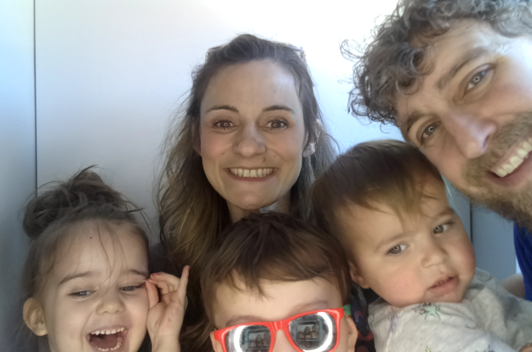
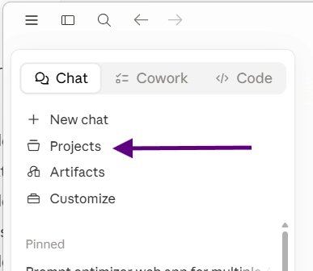
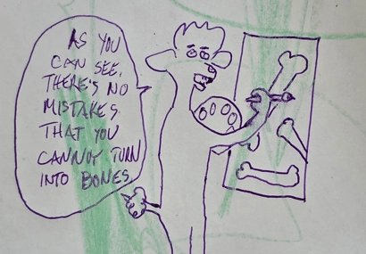
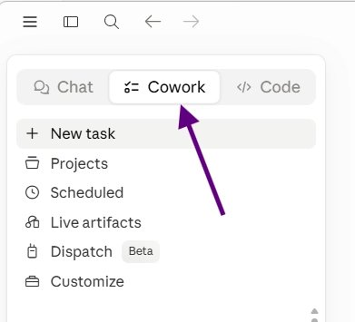
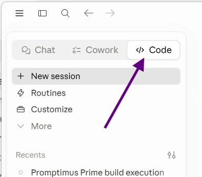
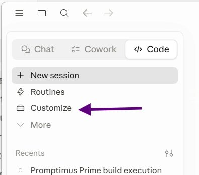
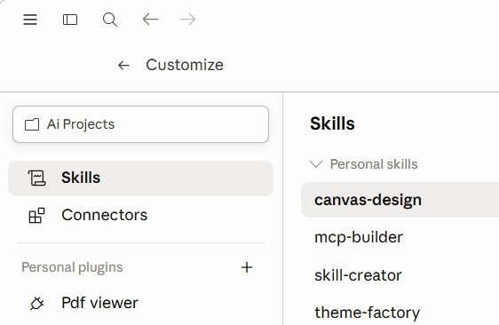

A wise person (on a podcast) once said, "There are no experts or best practices when it comes to using AI for your job. There are only people who have experimented more than you." We're in a rare phase where the best way to learn this world changing thing is to experiment with it. The idea with this app is that you follow the modules in order and with each one, you build the foundation on which you can experiment. (Except for image generation. That's more like a side quest.)
No one really knows the best ways for you to utilize AI as a teacher, but I know, deep in my soul, that it can make things easier for you, and allow you to be an even better educator (without having to cross certain lines, like letting the AI do your grading). But the only way you'll figure it out is if you experiment. The world needs brilliant and beautiful people like you to figure this stuff out so you can help lead everyone else into the future. Without you, the capitalist pigs will set the course, and everyone will be fucked. Save us, Jane Mizzi. You're our only hope.

These are a few small tips that will help you get more value out of the AI.
- Meta prompting: ask the AI to improve your prompt before having it run the task. It's the steroids Bane uses before he gets huge and breaks Batman's back.
- Have the AI ask you questions to surface information before you proceed with a task. The context portfolio in module 3 is a good example of this. Tell it your goal and ask it to interview you until it has enough information to complete the task.
- Don't be afraid to ask the AI dumb questions. The AI has no feelings, opinions, or expectations. It also has boundless patience. Never hold yourself back from asking the AI a question because you think it's dumb. You miss 100% of the dumb questions you don't ask AI. 60% of the time, the question is not dumb 100% of the time.
- Tell the AI to ask you questions if anything is unclear. A lot of times I end my prompts with "Ask me up to five questions if anything is not clear." That helps avoid a lot of wasted time going down the wrong path.
- Think of the AI as a partner, instead of as a tool.
I still use Claude on my phone all the time, but for any serious task, like making an app for the love of my life, I always use the desktop app.
Here's the link to download it on your MacBook:
Download Claude for Mac →This is an AI powered tool that interviews you and builds 10 files for you that are all about you, what you do, your preferences, how you work, etc. Then you can give those files to whichever AI you're working with and it will reference that information every time you interact with it. Imagine the difference between asking who knows you really well to do something, as opposed to asking a complete stranger to do the same task. Maybe that was an obvious analogy. I should have asked Claude to write it.
Open the interviewer →As you figure things out, this will be where you go to ask the AI questions. You'll create a project called knowledge, or something. Then you dump your context portfolio into it, and add some explainer that you are learning how to do this stuff and you don't have any prior knowledge of coding. Then you start a chat where you'll ask all of your questions. You can always go back to this chat with questions. No need to create a new one each time. You'll never fill up the context window by just asking questions.
To be honest, I don't do this myself. When I have questions, I ask them in the chat that I am working in. That works for me, but some people find the thought partner really helpful. I think the key to getting value from it is to be clear with it about what you are doing, what your goals are, and to be consistent with it.
Bonus Tip: When asking the AI a question about something you're doing, giving it a screenshot is much better than trying to explain what's going on on your screen. Macs have a screenshot app for grabbing areas of your screen instead of a full screenshot. Hit shift + command + 4 to snip a selected area.
This is one place that the context portfolio really pays off. Each project is a group of chats that share context, so for example, if you have a project for worksheet creation, you could include specific examples of worksheets that you have made in the past, and all chats in that project will reference those examples every time.

It's kind of obligatory for any AI training. Create some stuff. Get weird. See what works and what doesn't. Google Gemini and ChatGPT are the two easiest ways to create images. Anthropic is too busy making money to develop a image generation model.
BTW, you don't need to make any weird, almost real photos of loved ones. But you can turn your loved ones into dogs, if that's what you're in to.

A more powerful way of interacting with Claude. It can autonomously modify files on your computer. It can also do scheduled tasks, like creating a daily brief to prepare you for the day. I used Cowork to add all of the items from the SLM snack list to instacart, and I pretty much only told it to find the email and fill the cart. It can be really useful, but you kind of have to play with it to figure out the best uses for you. It can help organize files on your computer, but that's like saying a fighter jet has a comfortable seat. It's not really like that, but you get the point.

This will probably end up being the way you use AI most of the time, or at least for any big task. You don't need to know anything about coding, and it's the most powerful way to interact with Claude. The following items on this list are used in Claude Code (although a couple also work with co-work).

These give Claude access to existing apps like Canva or Gmail. What the AI can accomplish on specific tasks with tools is way beyond what it can do on its own, like a person trying to build a house with their bear ass hands, and then getting power tools.

Kind of like tools in that you use a skill to help you with a specific task, but skills are more like a playbook. To use the worksheet example again, you could write a skill explaining all the rules and instructions for creating a new worksheet, and then you can call that skill in any chat, which avoids you having to reexplain everything about worksheets.

This is a command that you add to a prompt that will make the AI go through a loop until it accomplishes a task. It requires a concrete measure of success, like a rubric, so that it knows when it's done. This is a fundamental change in how we can work with AI, and it didn't exist two weeks ago. I think there's a ton of potential here for teachers. This is another way that you could generate worksheets. Claude suggested, "generating leveled versions of a reading until each hits a target grade level." It would probably also work well for grading, but I know that's a sensitive subject.
It's a free, 8 module, self guided training. I'm just starting it, but I think it might be really useful for you.
Open AgentOS →